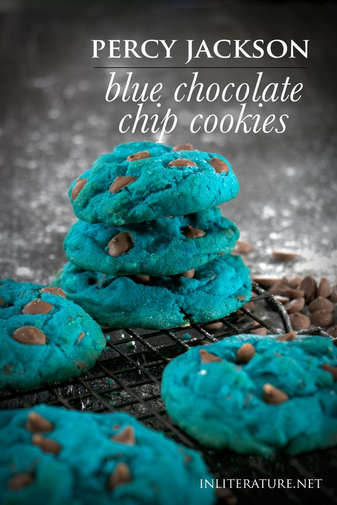

Percy's comfort food

A wonderful rebellious recipe, that to be known as one of the most iconic
dishes in the Percy Jackson's fandom. An outstanding delicous and sweetful treat
that will always leave you longing for more.
Ingredients
- 175g butter, softened to room temperature
- 1/2 cup brown sugar
- 1/4 cup white sugar
- 2 eggs
- blue food dye
- 2 cups plain flour
- 1 cup chocolate chip pieces
Instructions
- Start by making sure your ingredients are at room temperature.
- Preheat your oven to 160C.
- In a mixer, cream together the butter, sugars, and eggs.
- Add in a splash of blue food dye. If you add it to just the wet ingredients,
you'll get a nice blue consistency through your cookies.
- Stir in the flour, then stir in the choc chip pieces.
- Scoop a tablespoon onto a baking paper-lined tray.
No need to press them down, they'll flat themselves.
- Bake for ~15 minutes (depending on your oven).
- Remove from oven and let cool before eating.